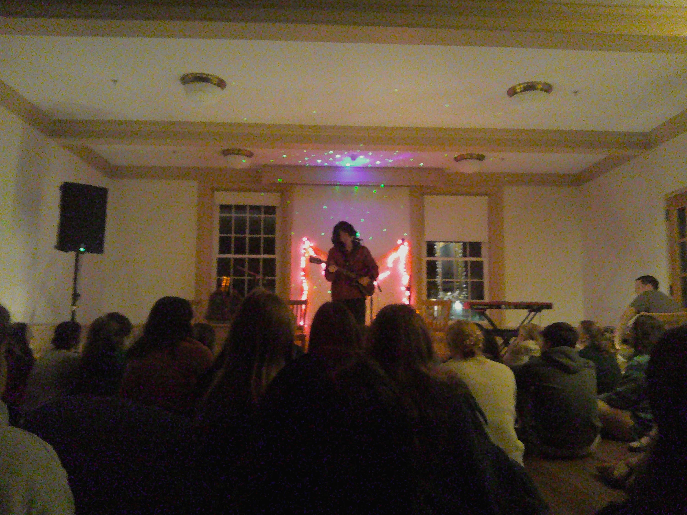

Lionel Yu
Update: December 6 - I was in the U.K. with my family over Thanksgiving break, and as vacation always is,
it was a a period of perhaps profound reflection. We had toured Oxford for a day, and on the long Uber ride going there, gazing at the scrolling of
a foreign land, I was confronted with a feeling of yesteryear. I jotted down my thoughts at the time, but my friend at the newspaper
here asked that I give her something so I made those thoughts half-decent: "Carseat Reflections on an Uber to Oxford"
I post writing I'm slightly proud of here.
I flail about in sleepless fear and sonder
Further evolutions to come ~
List of Works:
27 Nov 2025 - "Carseat Reflections on an Uber to Oxford" - Personal Prose
15 Nov 2025 - "declaration" - Personal Prose
5 May 2025 - "Portrait of a First Year" - Personal Prose
22 Mar 2025 - "Woah" - Personal Prose
30 Oct 2024 - "Enter the Hero" - Media Analysis
